此文档是为方便使用Unity3d引擎的开发者嵌入有米广告SDK而撰写的，有错漏之处，请各位开发者指正。申请Appid等流程请参考标准SDK文档
v4.06 2013-11-14
v4.05
v4.04
v4.03
该过程不详述，请参考网上相关资料。
该过程不详述，请参考网上相关资料。
该过程请参考标准教程。
1.1. 使用Eclipse创建工程。
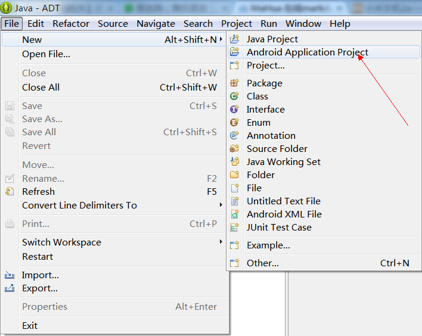
务必填写唯一标识您的应用的包名(示例是com.youmi.android.sample.unity3d，切不可直接复制使用哦)。
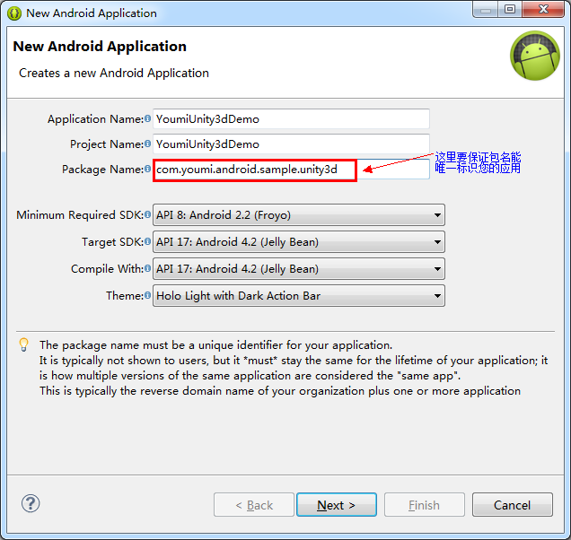
之后就一直Next，直到Finish
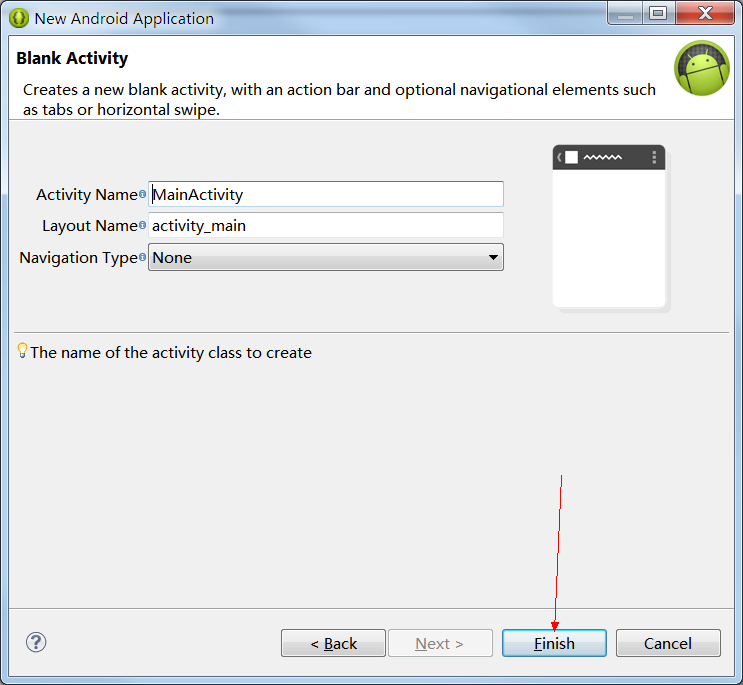
1.2. 导入广告SDK的jar包和Unity3d的android插件jar包。
有两个需要导入的jar包
一个是unity3d的插件，在Unity3d安装目录\Editor\Data\PlaybackEngines\androidplayer\bin 目录下找到，如下图:
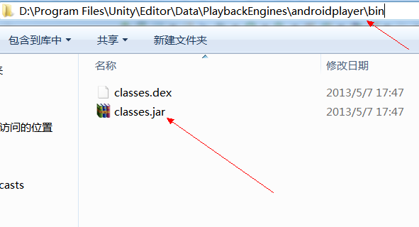
另一个是有米的sdk jar，建议使用最新版本。
直接将jar复制到Android工程目录下的libs，之后将它们添加到BuildPath里面:
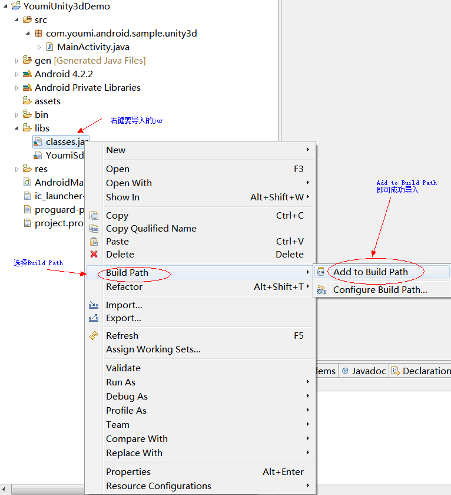
预览一下工程目录:
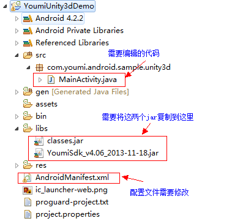
1.3. 创建入口类继承UnityPlayerActivity，并且实现给Unity调用的接口。
如示例所示，编辑MainActivity.java，当然您可以随意更改其名字，但如果对于Android的java工程不熟悉的话建议默认即可。
package com.youmi.android.sample.unity3d;
import com.unity3d.player.UnityPlayerActivity;
import net.youmi.android.AdManager;
import net.youmi.android.banner.AdSize;
import net.youmi.android.banner.AdView;
import net.youmi.android.offers.OffersAdSize;
import net.youmi.android.offers.OffersBanner;
import net.youmi.android.offers.OffersManager;
import net.youmi.android.offers.PointsManager;
import net.youmi.android.spot.SpotManager;
import android.os.Bundle;
import android.os.Handler;
import android.view.Gravity;
import android.widget.FrameLayout;
import android.app.Activity;
public class MainActivity extends UnityPlayerActivity {
Activity mContext = null;
/**
* 积分Banner
*/
OffersBanner mOffersBanner;
/**
* 无积分Banner
*/
AdView mAdView;
/**
* Handler，用于线程与UI交互
*/
Handler mHandler;
/**
* 用于标记是否已经初始化了插播广告
*/
boolean mHasInitSpot = false;
@Override
protected void onCreate(Bundle savedInstanceState) {
super.onCreate(savedInstanceState);
this.mContext = this;
// 初始化
AdManager.getInstance(this).init("4ffcc4c5ca8910c8",
"34b536fd8a7e0195", false);
// 积分墙积分初始化
OffersManager.getInstance(this).onAppLaunch();
// Handler初始化
mHandler = new Handler();
}
/**
* 展示全屏积分墙--可以在Unity3d中直接调用
*/
public void showOffers() {
OffersManager.getInstance(this).showOffersWall();
}
/**
* 展示对话框积分墙--可以在Unity3d中直接调用
*/
public void showOffersDialog() {
mHandler.post(new Runnable() {
@Override
public void run() {
// TODO Auto-generated method stub
OffersManager.getInstance(mContext).showOffersWallDialog(
mContext);
}
});
}
/**
* 查询积分--可以在Unity3d中直接调用
*
* @return
*/
public int queryPoints() {
return PointsManager.getInstance(this).queryPoints();
}
/**
* 消费积分--可以在Unity3d中直接调用
*
* @param p
* @return
*/
public boolean spendPoints(int p) {
return PointsManager.getInstance(this).spendPoints(p);
}
/**
* 奖励积分(如用户完成了某个你觉得需要奖励他积分的操作时调用此接口进行奖励)--可以在Unity3d中直接调用
*
* @param p
* @return
*/
public boolean awardPoints(int p) {
return PointsManager.getInstance(this).awardPoints(p);
}
/**
* 调用无积分插播广告--可以在Unity3d中直接调用
*/
public void showSpot() {
if (!mHasInitSpot) {
mHasInitSpot = true;
SpotManager.getInstance(this).loadSpotAds();
}
SpotManager.getInstance(this).showSpotAds(this);
}
/**
* 实例化积分Banner并且将其加入到游戏界面中 --可以在Unity3d中直接调用
*/
public void addOffersBanner() {
if (mOffersBanner == null) {
mHandler.post(new Runnable() {
@Override
public void run() {
// TODO Auto-generated method stub
try {
// 实例化
OffersBanner banner = new OffersBanner(mContext,
OffersAdSize.SIZE_320x60);
// 悬浮布局
FrameLayout.LayoutParams lp = new FrameLayout.LayoutParams(
-1, -2);
// 这里设定为底部，可以根据需要在这里进行改动。
lp.gravity = Gravity.BOTTOM;
addContentView(banner, lp);
mOffersBanner = banner;
} catch (Exception e) {
// TODO: handle exception
}
}
});
}
}
/**
* 实例化无积分Banner并且将其加入到游戏界面中 --可以在Unity3d中直接调用
*/
public void addBanner() {
if (mAdView == null) {
mHandler.post(new Runnable() {
@Override
public void run() {
// TODO Auto-generated method stub
try {
// 实例化
AdView adview = new AdView(mContext, AdSize.SIZE_320x50);
// 悬浮布局
FrameLayout.LayoutParams lp = new FrameLayout.LayoutParams(
-1, -2);
// 这里设定为底部，可以根据需要在这里进行改动。
lp.bottomMargin = 120;
lp.gravity = Gravity.BOTTOM|Gravity.CENTER_HORIZONTAL;
addContentView(adview, lp);
mAdView = adview;
} catch (Exception e) {
// TODO: handle exception
}
}
});
}
}
}
1.4. 配置AndroidManifest.xml。
可以直接复制里面的大部分内容，但是有两点需要注意的地方：
1、必须正确填写您的应用的包名。
2、本次demo为竖屏方向，故MainActivity的屏幕方向设置为竖屏，即添加android:screenOrientation="portrait"
<?xml version="1.0" encoding="utf-8"?>
<manifest xmlns:android="http://schemas.android.com/apk/res/android"
package="此处更改为你的包名"
android:versionCode="1"
android:versionName="1.0" >
<uses-sdk
android:minSdkVersion="8"
android:targetSdkVersion="17" />
<uses-permission android:name="android.permission.INTERNET"/>
<uses-permission android:name="android.permission.READ_PHONE_STATE"/>
<uses-permission android:name="android.permission.ACCESS_NETWORK_STATE" />
<uses-permission android:name="android.permission.ACCESS_WIFI_STATE"/>
<uses-permission android:name="android.permission.WRITE_EXTERNAL_STORAGE"/>
<uses-permission android:name="android.permission.SYSTEM_ALERT_WINDOW"/>
<uses-permission android:name="android.permission.GET_TASKS"/>
<!--以下为可选权限-->
<uses-permission android:name="com.android.launcher.permission.INSTALL_SHORTCUT"/>
<application
android:allowBackup="true"
android:icon="@drawable/ic_launcher"
android:label="@string/app_name"
android:theme="@style/AppTheme" >
<activity
android:name="此处更改为你的包名.MainActivity"
android:label="@string/app_name"
android:screenOrientation="portrait" >
<intent-filter>
<action android:name="android.intent.action.MAIN" />
<category android:name="android.intent.category.LAUNCHER" />
</intent-filter>
</activity>
<activity
android:name="com.unity3d.player.UnityPlayerActivity">
</activity>
<!-- 添加必须的组件 -->
<activity
android:name="net.youmi.android.AdBrowser"
android:configChanges="keyboard|keyboardHidden|orientation"
android:theme="@android:style/Theme.Light.NoTitleBar" >
</activity>
<service
android:name="net.youmi.android.AdService"
android:exported="false" >
</service>
<receiver
android:name="net.youmi.android.AdReceiver" >
<intent-filter>
<action android:name="android.intent.action.PACKAGE_ADDED" />
<data android:scheme="package" />
</intent-filter>
</receiver>
<!-- 配置OffersReceiver -->
<receiver
android:name="net.youmi.android.offers.OffersReceiver"
android:exported="false" >
</receiver>
</application>
</manifest>
1.5. Build项目，生成class文件。
目标是将之前编辑的MainActivity.java和res的一些资源引用编译为class文件。编译方式有很多种，这里只选择较为简单的方式。
首先，运行一下clean，清除一些编译缓存:
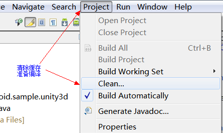
之后，编译和运行一下项目即可生成所需要的class
注意这一步的作用在于编译生成.class文件，随之而生成的apk文件是不能运行的，请忽略
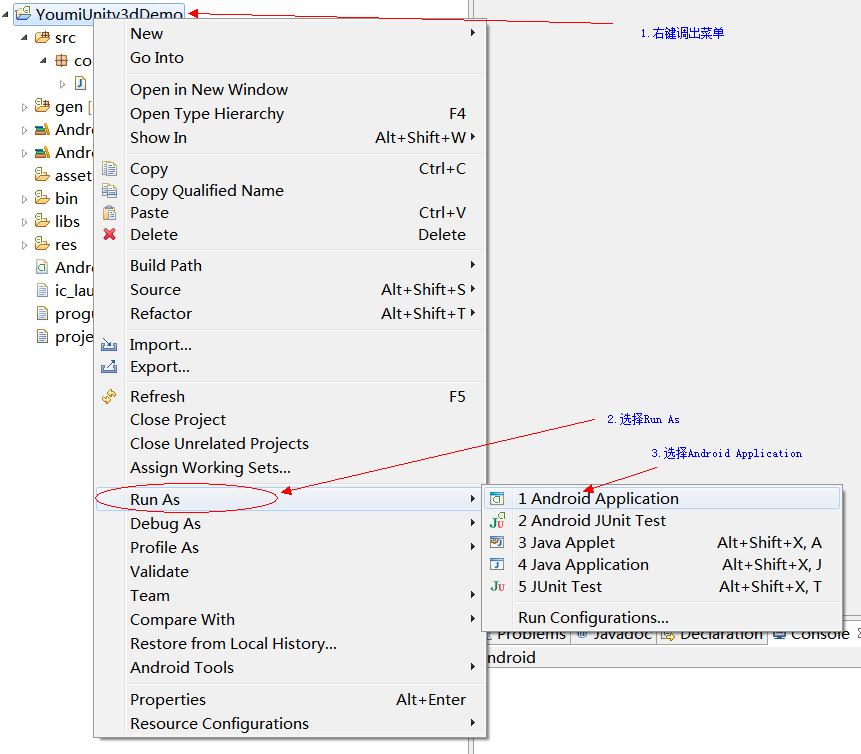
生成的class文件，可以在bin/classes目录下找到:
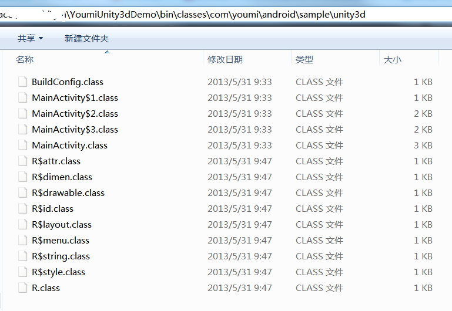
1.6. 将bin目录下的class文件打包成jar，命名可随意，如youmidemo.jar。
首先，使用cmd等命令行工具，到达工程目录\bin\classes目录下，运行命令: jar -cvf ..\youmidemo.jar *
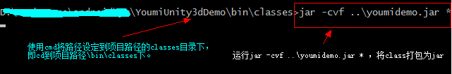
这样会在工程目录\bin目录下生成 youmidemo.jar，该jar之后需要导入到unity3d工程中。
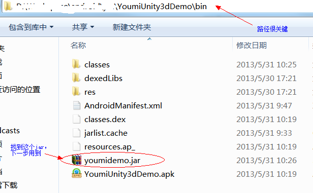
到这里，Android java工程部分的工作已经结束，接下来进入Unity3d工程部分。
开始之前请开发者自行设置Android Sdk的路径：依次进入Edit->Preferences->External Tools->Android SDK Location
2.1. 设置项目参数。
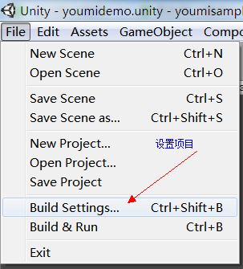
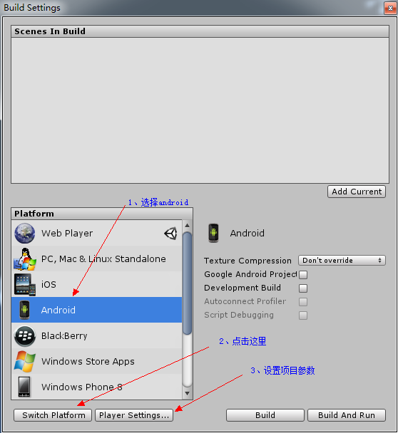
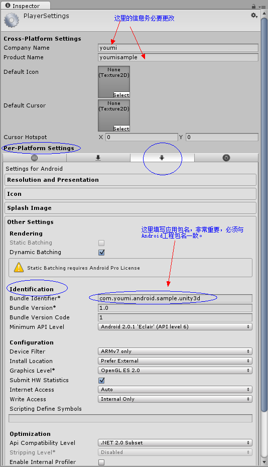
同时也要注意设定Unity3d项目中的屏幕方向，要注意与Android项目中的AndroidManifest.xml(上述1.4步骤)中所设置的保持一致，不然启动app之后旋转屏幕可能会app崩溃的现象
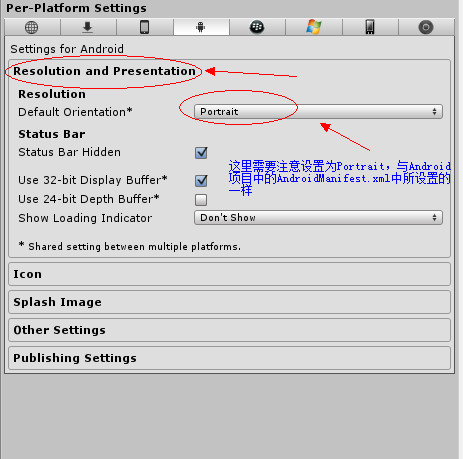
2.2. 导入Android工程
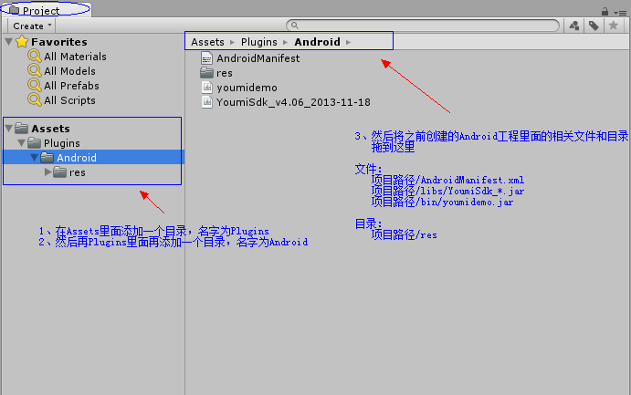
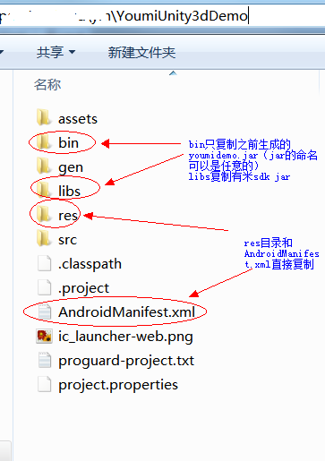
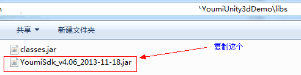
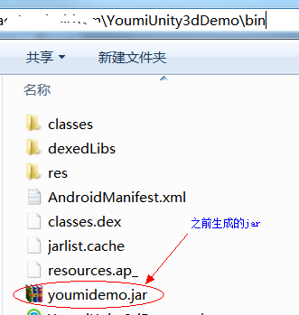
2.3. 编写调用脚本，放置在Assets目录下。
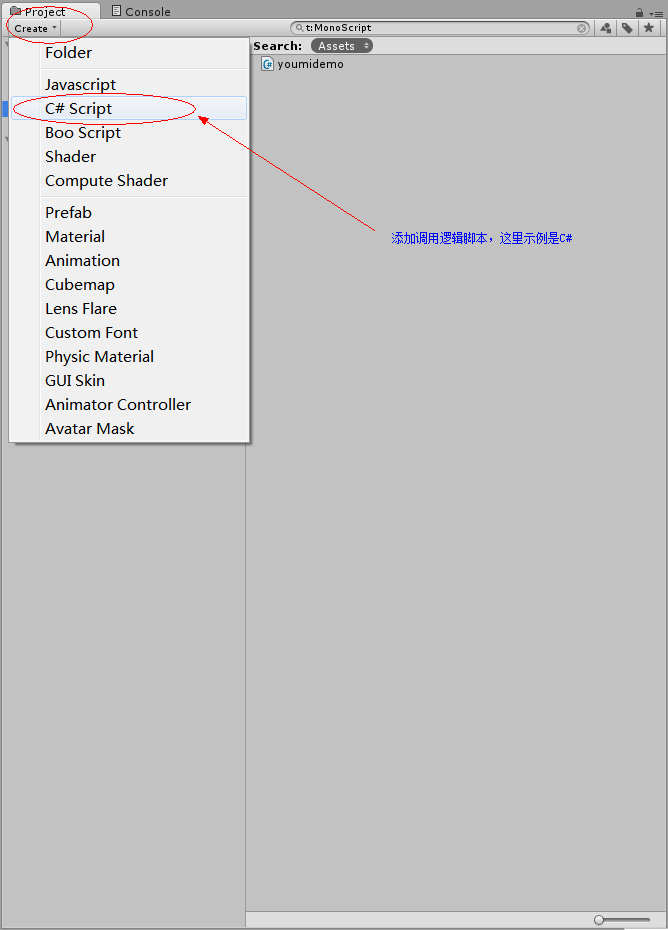
脚本示例:
using UnityEngine;
using System.Collections;
public class youmidemo : MonoBehaviour {
AndroidJavaClass mJc;
AndroidJavaObject mJo;
//public Texture texTitle;
//public Texture texPoints;
private int mPoints;
void OnGUI(){
GUILayout.Label("Youmi Sdk Sample");
GUILayout.Label("My Points: "+mPoints);
if(GUILayout.Button("Show Offers",GUILayout.Height(100))){
mJo.Call("showOffers"); //show full screen offers wall
}
if(GUILayout.Button("Show Offers Dialog",GUILayout.Height(100))){
mJo.Call("showOffersDialog"); //show dialog offers wall
}
if(GUILayout.Button("Query Points",GUILayout.Height(100))){
this.mPoints=mJo.Call<int>("queryPoints");//query the points of user's point account
}
if(GUILayout.Button("Award 10 Points",GUILayout.Height(100))){
if(mJo.Call<bool>("awardPoints",10)){//demo of award 10 points
this.mPoints=mJo.Call<int>("queryPoints"); //the function return true when award point success ,
then change the value of this.mPoints to display
}
}
if(GUILayout.Button("Spend 5 Points",GUILayout.Height(100))){
if(mJo.Call<bool>("spendPoints",5)){ //demo of spend 5 points
this.mPoints=mJo.Call<int>("queryPoints"); //the function return true when spend point success ,
then change the value of this.mPoints to display
}
}
if(GUILayout.Button("Show Spot",GUILayout.Height(100))){
mJo.Call("showSpot"); //show spot
}
if(GUILayout.Button("Exit",GUILayout.Height(100))){
Application.Quit(); //exit
}
}
// Use this for initialization
void Start () {
mJc=new AndroidJavaClass("com.unity3d.player.UnityPlayer");
mJo=mJc.GetStatic<AndroidJavaObject>("currentActivity");
mJo.Call("addOffersBanner");//show offers banner
mJo.Call("addBanner"); //show banner
}
// Update is called once per frame
void Update () {
if(Input.GetKeyDown(KeyCode.Escape) || Input.GetKeyDown(KeyCode.Home) )
{
Application.Quit(); //exit when key back
}
}
}
本示例中，demo为生成几个按钮，故需要将脚本绑定到摄像机中
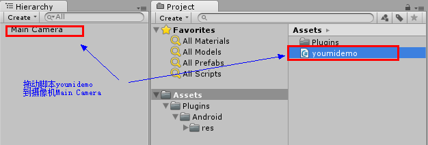
2.4. 编译运行，注意此时最好连上手机进行调试。
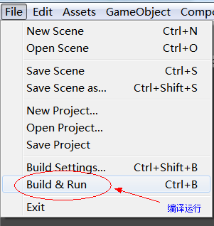
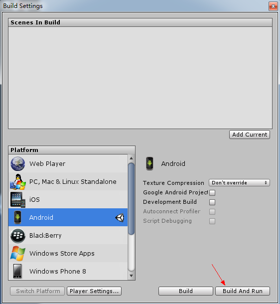
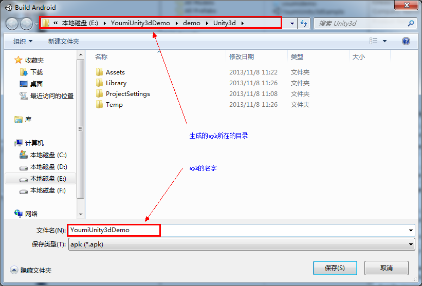
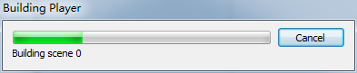
等待进度条完毕即可
附：运行界面
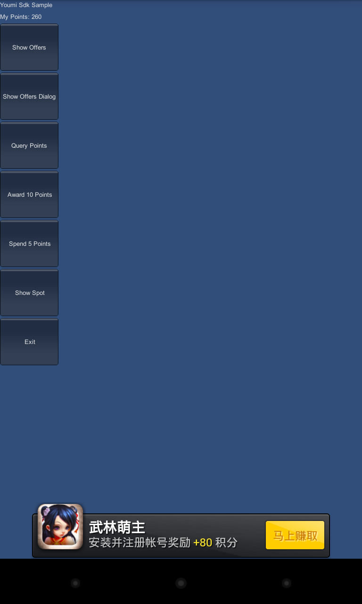
在使用中有任何问题，欢迎联系有米客服，我们会竭诚为您服务！